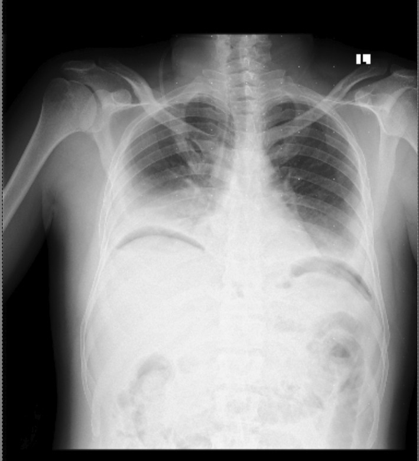

Ficha del catálogo
Neumoperitoneo y perforación de víscera hueca
- Sistema
- Digestivo
- Modalidad
- RX
- Región
- Cavidad peritoneal
- Dificultad
- Básico
Es la presencia de gas libre dentro de la cavidad peritoneal, casi siempre por perforación de una víscera hueca. La úlcera péptica gastroduodenal, la diverticulitis complicada y la perforación tumoral o isquémica son las causas más frecuentes. También aparece de forma esperable después de una laparotomía o una laparoscopia, situación en la que no traduce complicación.
Técnica
La radiografía de tórax posteroanterior en bipedestación es la proyección más sensible del estudio convencional, porque el gas asciende y se dibuja bajo las cúpulas diafragmáticas. Conviene que el paciente permanezca sentado o de pie durante al menos 5 a 10 minutos antes del disparo. Si no tolera la bipedestación se realiza una proyección en decúbito lateral izquierdo con rayo horizontal, que muestra el gas entre el hígado y la pared abdominal lateral.
Qué observar
- Semiluna radiolúcida bajo uno o ambos hemidiafragmas en la proyección en bipedestación
- Signo de Rigler o de la doble pared, con la pared intestinal delineada por gas en sus dos caras
- Visualización anómala del ligamento falciforme como una línea vertical en el hipocondrio derecho
- Colección aérea triangular entre asas o en el receso hepatorrenal en el decúbito
- Gas que perfila la cúpula diafragmática o el ligamento umbilical medial en la proyección supina
- Cantidad, localización y signos acompañantes como líquido libre, íleo o engrosamiento parietal
Hallazgos
En bipedestación el hallazgo típico es una banda de aire subdiafragmática que separa el hígado del diafragma derecho. En decúbito supino, que es la posición habitual del paciente grave, el gas se acumula en la parte anterior del abdomen y produce signos más sutiles como el signo de Rigler, el perfilado del ligamento falciforme, el signo de la cúpula sobre la línea media y el aspecto de balón de rugby cuando el volumen es muy grande. La tomografía identifica burbujas milimétricas invisibles en la radiografía y suele localizar el punto de perforación por la discontinuidad de la pared, la burbuja adyacente y la trabeculación grasa focal.
Perlas
Una radiografía sin gas libre no descarta perforación. Cuando la sospecha clínica es alta conviene pasar directamente a la tomografía, que detecta volúmenes muy pequeños y además orienta sobre el órgano perforado. En el postoperatorio el gas residual es normal y va disminuyendo día a día, de modo que lo alarmante no es su presencia sino que aumente o que se acompañe de colecciones y líquido nuevo.
Diagnóstico diferencial
- Interposición colónica hepatodiafragmática
- El gas contiene haustras y se continúa con el colon, y el hígado no se separa del diafragma.
- Absceso subfrénico con gas
- Colección con nivel hidroaéreo, pared que realza y localización fija, sin desplazarse con los cambios de posición.
- Neumatosis intestinal
- El gas sigue el contorno de la pared del asa y no se acumula libremente en las porciones no declives.
- Neumomediastino disecante
- El aire perfila estructuras mediastínicas y cervicales, y no se desplaza al peritoneo con el decúbito lateral.
- Neumoperitoneo posquirúrgico esperado
- Antecedente reciente de cirugía abdominal, volumen que disminuye en controles sucesivos y ausencia de deterioro clínico.
Simuladores
- Grasa extraperitoneal o subdiafragmática que forma una línea lúcida en la radiografía
- Cámara gástrica o ángulo esplénico muy distendidos proyectados bajo el diafragma izquierdo
- Atelectasia laminar basal que crea una banda oscura por debajo del pulmón
Por modalidad
- RX
- Método inicial rápido y accesible, con la bipedestación como posición óptima y el decúbito lateral izquierdo como alternativa en el paciente que no se levanta
- TC
- Es el estudio de referencia por su altísima sensibilidad al gas y por su capacidad de localizar el sitio de perforación y sus complicaciones
- US
- Puede detectar reverberaciones anómalas por gas libre anterior al hígado, pero es operador dependiente y no se usa como método principal
Protocolo
Radiografía de tórax posteroanterior en bipedestación tras 5 a 10 minutos de reposo en esa posición, complementada con radiografía simple de abdomen. En el paciente encamado se usa decúbito lateral izquierdo con rayo horizontal. La tomografía se realiza sin contraste oral positivo, con cortes finos y revisión obligatoria en ventana de pulmón, que hace evidentes las burbujas mínimas.
Clasificación
Errores frecuentes
- Revisar la tomografía solo en ventana de partes blandas y pasar por alto burbujas de pocos milímetros
- Interpretar como perforación el gas fisiológico de un postoperatorio reciente
- Confundir la interposición del colon delante del hígado con aire libre subdiafragmático

neumoperitoneo perforacion signo de Rigler abdomen agudo radiografia simple ulcera peptica gas libre